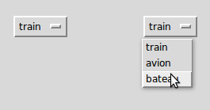

Le but de ce widget est d’offrir un ensemble fixe de choix à l’utilisateur dans un menu déroulant.
L’illustration ci-dessus montre un menu d’options, OptionMenu, dans deux états. L’exemple de gauche montre le widget dans sa forme initiale. L’exemple de droite montre à quoi il ressemble lorsqu’on a cliqué dessus avec la souris et qu’on a choisi ‘bateau’.
Pour créer un nouveau widget OptionMenu en tant qu’enfant d’une fenêtre ou d’un cadre nommé parent:
Ce constructeur renvoie le nouveau widget OptionMenu. La variable est une instance de la classe StringVar (voir Variables de contrôle: Les valeurs sous les widgets) qui est associée au widget, et les arguments restants sont les choix à afficher dans le widget sous forme de chaînes.
L’illustration ci-dessus a été créée avec cet extrait de code
listeOptions = ('train', 'avion', 'bateau')
v = StringVar()
v.set(listeOptions[0])
om = OptionMenu(root, v, *listeOptions)
Pour savoir quel choix est sélectionné dans un widget OptionMenu, la méthode get() sur la variable de contrôle associée retournera ce choix comme une chaîne.